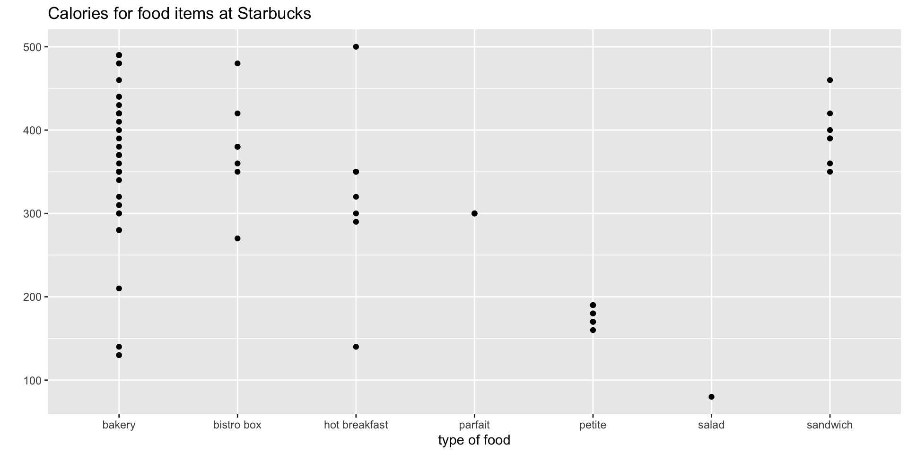
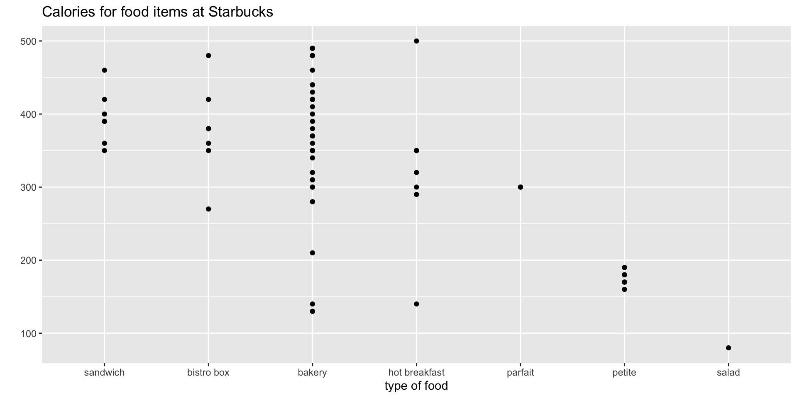

[1] "banana"Variable Types
February 17 + 19, 2025
Jo Hardin
Variable Types
Some new variable types:
- character strings
- factor variables
- dates
- numeric (decimal)
- integer
- logical (Boolean)
A variable’s type determines the values that the variable can take on and the operations that can be performed on it. Specifying variable types ensures the data’s integrity and increases performance.
Agenda 2/17/25
- Character strings
str_*()functions- Factor variables
Character strings
When working with character strings, we might want to detect, replace, or extract certain patterns.
Strings are objects of the character class (abbreviated as <chr> in tibbles). When you print out strings, they display with double quotes:
Creating strings
Creating strings by hand is useful for testing out regular expressions.
To create a string, type any text in either double quotes " or single quotes '. Using double or single quotes doesn’t matter unless your string itself has single or double quotes.
str_view()
We can view these strings “naturally” (without the opening and closing quotes) with str_view():
Working with strings
- yes, lots of code to learn
- no, the code doesn’t really matter
- learning goal for today:
what can you even do with string variables???
str_c
Similar to paste() (gluing strings together), but works well in a tidy pipeline.
str_sub()
str_sub(string, start, end) will extract parts of a string where start and end are the positions where the substring starts and ends.
[1] "App" "Ban" "Pea"[1] "ple" "ana" "ear"Won’t fail if the string is too short.
str_sub() in a pipeline
We can use the str_*() functions inside the mutate() function.
Class Sex Age Survived Freq class1
1 1st Male Child No 0 1
2 2nd Male Child No 0 2
3 3rd Male Child No 35 3
4 Crew Male Child No 0 C
5 1st Female Child No 0 1
6 2nd Female Child No 0 2
7 3rd Female Child No 17 3
8 Crew Female Child No 0 C
9 1st Male Adult No 118 1
10 2nd Male Adult No 154 2
11 3rd Male Adult No 387 3
12 Crew Male Adult No 670 C
13 1st Female Adult No 4 1
14 2nd Female Adult No 13 2
15 3rd Female Adult No 89 3
16 Crew Female Adult No 3 C
17 1st Male Child Yes 5 1
18 2nd Male Child Yes 11 2
19 3rd Male Child Yes 13 3
20 Crew Male Child Yes 0 C
21 1st Female Child Yes 1 1
22 2nd Female Child Yes 13 2
23 3rd Female Child Yes 14 3
24 Crew Female Child Yes 0 C
25 1st Male Adult Yes 57 1
26 2nd Male Adult Yes 14 2
27 3rd Male Adult Yes 75 3
28 Crew Male Adult Yes 192 C
29 1st Female Adult Yes 140 1
30 2nd Female Adult Yes 80 2
31 3rd Female Adult Yes 76 3
32 Crew Female Adult Yes 20 Cstr_replace*()
str_replace() replaces the first match of a pattern. str_replace_all() replaces all the matches of a pattern.
str_detect()
str_detect() in pipeline
str_detect() used in a filter() pipeline.
# A tibble: 87 × 2
name films
<chr> <list>
1 Luke Skywalker <chr [5]>
2 C-3PO <chr [6]>
3 R2-D2 <chr [7]>
4 Darth Vader <chr [4]>
5 Leia Organa <chr [5]>
6 Owen Lars <chr [3]>
7 Beru Whitesun Lars <chr [3]>
8 R5-D4 <chr [1]>
9 Biggs Darklighter <chr [1]>
10 Obi-Wan Kenobi <chr [6]>
# ℹ 77 more rows# A tibble: 87 × 8
name films1 films2 films3 films4 films5 films6 films7
<chr> <chr> <chr> <chr> <chr> <chr> <chr> <chr>
1 Luke Skywalker A New… The E… Retur… Reven… The F… <NA> <NA>
2 C-3PO A New… The E… Retur… The P… Attac… Reven… <NA>
3 R2-D2 A New… The E… Retur… The P… Attac… Reven… The F…
4 Darth Vader A New… The E… Retur… Reven… <NA> <NA> <NA>
5 Leia Organa A New… The E… Retur… Reven… The F… <NA> <NA>
6 Owen Lars A New… Attac… Reven… <NA> <NA> <NA> <NA>
7 Beru Whitesun Lars A New… Attac… Reven… <NA> <NA> <NA> <NA>
8 R5-D4 A New… <NA> <NA> <NA> <NA> <NA> <NA>
9 Biggs Darklighter A New… <NA> <NA> <NA> <NA> <NA> <NA>
10 Obi-Wan Kenobi A New… The E… Retur… The P… Attac… Reven… <NA>
# ℹ 77 more rowsstarwars |>
filter(str_detect(films, "Empire")) |>
select(name, films) |>
unnest_wider(films, names_sep = "")# A tibble: 16 × 8
name films1 films2 films3 films4 films5 films6 films7
<chr> <chr> <chr> <chr> <chr> <chr> <chr> <chr>
1 Luke Skywalker A New H… The E… Retur… Reven… The F… <NA> <NA>
2 C-3PO A New H… The E… Retur… The P… Attac… Reven… <NA>
3 R2-D2 A New H… The E… Retur… The P… Attac… Reven… The F…
4 Darth Vader A New H… The E… Retur… Reven… <NA> <NA> <NA>
5 Leia Organa A New H… The E… Retur… Reven… The F… <NA> <NA>
6 Obi-Wan Kenobi A New H… The E… Retur… The P… Attac… Reven… <NA>
7 Chewbacca A New H… The E… Retur… Reven… The F… <NA> <NA>
8 Han Solo A New H… The E… Retur… The F… <NA> <NA> <NA>
9 Wedge Antilles A New H… The E… Retur… <NA> <NA> <NA> <NA>
10 Yoda The Emp… Retur… The P… Attac… Reven… <NA> <NA>
11 Palpatine The Emp… Retur… The P… Attac… Reven… <NA> <NA>
12 Boba Fett The Emp… Retur… Attac… <NA> <NA> <NA> <NA>
13 IG-88 The Emp… <NA> <NA> <NA> <NA> <NA> <NA>
14 Bossk The Emp… <NA> <NA> <NA> <NA> <NA> <NA>
15 Lando Calrissian The Emp… Retur… <NA> <NA> <NA> <NA> <NA>
16 Lobot The Emp… <NA> <NA> <NA> <NA> <NA> <NA> stringr functions
The stringr package within tidyverse contains lots of functions to help process strings. Letting x be a string variable…
| str function | arguments | returns |
|---|---|---|
str_vew() |
x |
the string |
str_c() |
…, sep, collapse |
a new concatenated string |
str_sub() |
x, start, end |
a modified string |
str_replace() |
x, pattern, replacement |
a modified string |
str_replace_all() |
x, pattern, replacement |
a modified string |
str_detect() |
x, pattern |
TRUE/FALSE |
str_to_lower() |
x |
a modified string |
str_to_upper() |
x |
a modified string |
str_length() |
x |
a number |
Use the stringr cheatsheet.
str_*() functions on non-strings?
Do the functions that were built to handle strings work if the variable is not a string?
Starbucks data
# A tibble: 10 × 4
item calories fat type
<chr> <int> <dbl> <fct>
1 "Morning Bun" 350 16 bakery
2 "Red Velvet Whoopie Pie" 190 11 petite
3 "Chonga Bagel" 310 5 bakery
4 "8-Grain Roll" 350 8 bakery
5 "Marshmallow Dream Bar" 210 4 bakery
6 "Chocolate Croissant" 300 17 bakery
7 "Mallorca Sweet Bread" 420 25 bakery
8 "Ham & Swiss Panini" 360 9 sandwich
9 "Butter Croissant " 310 18 bakery
10 "Chocolate Creme Whoopie Pie" 190 11 petite set.seed(47)
starbucks |>
sample_n(10) |>
select(item, calories, fat, type) |>
mutate(TYPE = str_to_upper(type))# A tibble: 10 × 5
item calories fat type TYPE
<chr> <int> <dbl> <fct> <chr>
1 "Morning Bun" 350 16 bakery BAKERY
2 "Red Velvet Whoopie Pie" 190 11 petite PETITE
3 "Chonga Bagel" 310 5 bakery BAKERY
4 "8-Grain Roll" 350 8 bakery BAKERY
5 "Marshmallow Dream Bar" 210 4 bakery BAKERY
6 "Chocolate Croissant" 300 17 bakery BAKERY
7 "Mallorca Sweet Bread" 420 25 bakery BAKERY
8 "Ham & Swiss Panini" 360 9 sandwich SANDWICH
9 "Butter Croissant " 310 18 bakery BAKERY
10 "Chocolate Creme Whoopie Pie" 190 11 petite PETITE set.seed(47)
starbucks |>
sample_n(10) |>
select(item, calories, fat, type) |>
filter(str_detect(fat, "1"))# A tibble: 5 × 4
item calories fat type
<chr> <int> <dbl> <fct>
1 "Morning Bun" 350 16 bakery
2 "Red Velvet Whoopie Pie" 190 11 petite
3 "Chocolate Croissant" 300 17 bakery
4 "Butter Croissant " 310 18 bakery
5 "Chocolate Creme Whoopie Pie" 190 11 petiteset.seed(47)
starbucks |>
sample_n(10) |>
select(item, calories, fat, type) |>
mutate(newcal = str_replace(calories, "0", "&"))# A tibble: 10 × 5
item calories fat type newcal
<chr> <int> <dbl> <fct> <chr>
1 "Morning Bun" 350 16 bakery 35&
2 "Red Velvet Whoopie Pie" 190 11 petite 19&
3 "Chonga Bagel" 310 5 bakery 31&
4 "8-Grain Roll" 350 8 bakery 35&
5 "Marshmallow Dream Bar" 210 4 bakery 21&
6 "Chocolate Croissant" 300 17 bakery 3&0
7 "Mallorca Sweet Bread" 420 25 bakery 42&
8 "Ham & Swiss Panini" 360 9 sandwich 36&
9 "Butter Croissant " 310 18 bakery 31&
10 "Chocolate Creme Whoopie Pie" 190 11 petite 19& Agenda 2/19/25
- Factor variables
- Time and date objects
Factor variables
Factor variables are a special type of character string. The computer actually stores them as integers (?!?!!?) with a label (abbreviated as <fct> in tibbles).
- categorical variable
- represented in discrete levels with an ordering
Where do we order?
The ordering of the factor variable comes out in:
- plots (e.g., barplots)
- tables (e.g.,
group_by()) - modeling (e.g., the baseline level in a linear regression)
Order matters
SurveyUSA poll from 2012 on views of the DREAM Act.
What is off about the data viz part of the report?
Change the order
We can fix the order of the ideology variable.
Factor and character variables
# A tibble: 77 × 3
item type calories
<chr> <fct> <int>
1 "8-Grain Roll" bakery 350
2 "Apple Bran Muffin" bakery 350
3 "Apple Fritter" bakery 420
4 "Banana Nut Loaf" bakery 490
5 "Birthday Cake Mini Doughnut" bakery 130
6 "Blueberry Oat Bar" bakery 370
7 "Blueberry Scone" bakery 460
8 "Bountiful Blueberry Muffin" bakery 370
9 "Butter Croissant " bakery 310
10 "Cheese Danish" bakery 420
# ℹ 67 more rows
Reorder according to another variable
Lets say that we wanted to order the type of food item based on the average number of calories in that food.

Change character to factor
# A tibble: 77 × 7
item calories fat carb fiber protein type
<chr> <int> <dbl> <int> <int> <int> <fct>
1 "8-Grain Roll" 350 8 67 5 10 bake…
2 "Apple Bran Muffin" 350 9 64 7 6 bake…
3 "Apple Fritter" 420 20 59 0 5 bake…
4 "Banana Nut Loaf" 490 19 75 4 7 bake…
5 "Birthday Cake Mini Dough… 130 6 17 0 0 bake…
6 "Blueberry Oat Bar" 370 14 47 5 6 bake…
7 "Blueberry Scone" 460 22 61 2 7 bake…
8 "Bountiful Blueberry Muff… 370 14 55 0 6 bake…
9 "Butter Croissant " 310 18 32 0 5 bake…
10 "Cheese Danish" 420 25 39 0 7 bake…
# ℹ 67 more rows# A tibble: 77 × 7
item calories fat carb fiber protein type
<fct> <int> <dbl> <int> <int> <int> <fct>
1 "8-Grain Roll" 350 8 67 5 10 bake…
2 "Apple Bran Muffin" 350 9 64 7 6 bake…
3 "Apple Fritter" 420 20 59 0 5 bake…
4 "Banana Nut Loaf" 490 19 75 4 7 bake…
5 "Birthday Cake Mini Dough… 130 6 17 0 0 bake…
6 "Blueberry Oat Bar" 370 14 47 5 6 bake…
7 "Blueberry Scone" 460 22 61 2 7 bake…
8 "Bountiful Blueberry Muff… 370 14 55 0 6 bake…
9 "Butter Croissant " 310 18 32 0 5 bake…
10 "Cheese Danish" 420 25 39 0 7 bake…
# ℹ 67 more rowsforcats functions
The forcats package within tidyverse contains lots of functions to help process factor variables Use the forcats cheatsheet. We’ll focus on the most common functions.
- functions for changing the order of factor levels
fct_relevel()= manually reorder levelsfct_reorder()= reorder levels according to values of another variablefct_infreq()= order levels from highest to lowest frequencyfct_rev()= reverse the current order
- functions for changing the labels or values of factor levels
fct_recode()= manually change levelsfct_lump()= group together least common levels
Time and date objects
If the variable is formatted as a time or date object, you will find that there are very convenient ways to access, wrangle, and plot the information.
There are 3 types of date/time data that refer to an instant in time:
A date. Tibbles print this as <date>.
A time within a day. Tibbles print this as <time>.
A date-time is a date plus a time: it uniquely identifies an instant in time (typically to the nearest second). Tibbles print this as <dttm>. Base R calls these POSIXct, but that doesn’t exactly trip off the tongue.
Formatting time variablse

image credit: https://xkcd.com/1179/
What time is it?
Creating dates
ymd() and friends create dates
… with times
To create a date-time, add an underscore and one or more of “h”, “m”, and “s” to the name of the parsing function:
[1] "2024-09-25 11:45:59 PDT"[1] "2024-09-25 15:01:00 UTC"lubridate
lubridate is a another R package meant for data wrangling!
In particular, lubridate makes it very easy to work with days, times, and dates. The base idea is to start with dates in a ymd (year month day) format and transform the information into whatever you want.
Example from the lubridate vignette.
If anyone drove a time machine, they would crash
The length of months and years change so often that doing arithmetic with them can be unintuitive.
Consider a simple operation: January 31st + one month.
If anyone drove a time machine, they would crash
The length of months and years change so often that doing arithmetic with them can be unintuitive.
Consider a simple operation: January 31st + one month.
Should the answer be:
- February 31st (which doesn’t exist)?
- March 4th (31 days after January 31)?
- February 28th (assuming its not a leap year)?
If anyone drove a time machine, they would crash
A basic property of arithmetic is that a + b - b = a. Only solution 1 obeys the mathematical property, but it is an invalid date. Wickham wants to make lubridate as consistent as possible by invoking the following rule: if adding or subtracting a month or a year creates an invalid date, lubridate will return an NA.
If you thought solution 2 or 3 was more useful, no problem. You can still get those results with clever arithmetic, or by using the special %m+% and %m-% operators. %m+% and %m-% automatically roll dates back to the last day of the month, should that be necessary.
basics in lubridate
basics in lubridate
Working with a date object
[1] "2024-01-31" NA "2024-03-31" NA "2024-05-31"
[6] NA "2024-07-31" "2024-08-31" NA "2024-10-31"
[11] NA "2024-12-31"[1] "2024-01-01" [1] "2024-02-01" "2024-03-03" "2024-04-01" "2024-05-02" "2024-06-01"
[6] "2024-07-02" "2024-08-01" "2024-09-01" "2024-10-02" "2024-11-01"
[11] "2024-12-02" "2025-01-01" [1] "2024-03-02" NA "2024-05-01" NA "2024-07-01"
[6] NA "2024-08-31" "2024-10-01" NA "2024-12-01"
[11] NA "2025-01-31" [1] "2024-01-31" "2024-02-29" "2024-03-31" "2024-04-30" "2024-05-31"
[6] "2024-06-30" "2024-07-31" "2024-08-31" "2024-09-30" "2024-10-31"
[11] "2024-11-30" "2024-12-31"NYC flights
NYC flights
Creating a date object from variables.
flightsWK <- flights |>
mutate(ymdday = ymd(paste(year, month,day, sep="-"))) |>
mutate(weekdy = wday(ymdday, label=TRUE),
whichweek = week(ymdday))
flightsWK |> select(year, month, day, ymdday, weekdy, whichweek,
dep_time, arr_time, air_time) # A tibble: 336,776 × 9
year month day ymdday weekdy whichweek dep_time arr_time
<int> <int> <int> <date> <ord> <dbl> <int> <int>
1 2013 1 1 2013-01-01 Tue 1 517 830
2 2013 1 1 2013-01-01 Tue 1 533 850
3 2013 1 1 2013-01-01 Tue 1 542 923
4 2013 1 1 2013-01-01 Tue 1 544 1004
5 2013 1 1 2013-01-01 Tue 1 554 812
6 2013 1 1 2013-01-01 Tue 1 554 740
7 2013 1 1 2013-01-01 Tue 1 555 913
8 2013 1 1 2013-01-01 Tue 1 557 709
9 2013 1 1 2013-01-01 Tue 1 557 838
10 2013 1 1 2013-01-01 Tue 1 558 753
# ℹ 336,766 more rows
# ℹ 1 more variable: air_time <dbl>